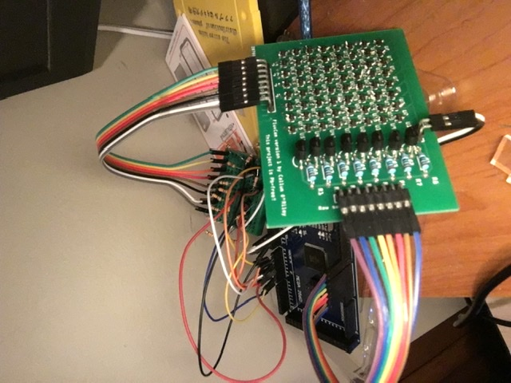
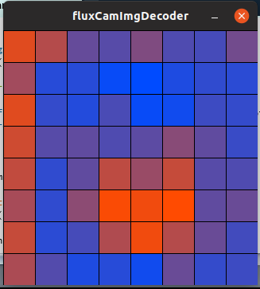
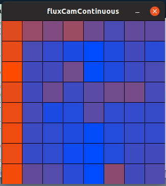
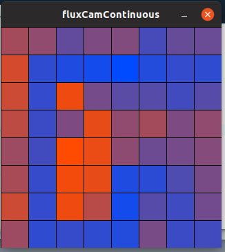

Magnetic flux camera
This is a magnetic flux camera that I made and presented at the 2020 Vancouver District Science Fair. I built it from November 2019 to February 2020 as part of my grade 12 Capstone project.

Theory of operation
The camera is basically an 8x8 array of Hall effect sensors, each sensor measuring the magnetic field passing through it. The fact that it measures the magnetic field passing through it over an area makes it a magnetic flux camera. An Arduino Mega is used to control the camera and read from each pixel, and send that data to a computer.
PCB design and SMD soldering
I had to use SMD Hall effect sensors, as using through-hole versions would have been too expensive. In addition, wiring so many sensors by hand would be very time-consuming, so I decided to design a PCB for the camera. I used Fritzing, as it was free and I had a bit of experience using it already. I organized the sensors in an 8x8 grid with the columns having a common line for analog output, and the power to the rows being switched by 8 2N7000 MOSFETs. I also added header pins for connecting the device to the Arduino. I ordered the PCB through JLCPCB, and it arrived in about a week using DHL shipping. I didn't have SMD soldering equipment, so I asked an electrical and computer engineering lab at UBC if I could use their equipment, and thankfully, they agreed. I spent about 6 hours total over 2 days after school soldering the components onto the PCB, and it was a great way for me to practice my SMD soldering skills, as prior to this project, I had no SMD soldering experience.
Problems
Once I had finished assembling the device and writing the software for it, I tested it, and it didn't work. As I was still relatively inexperienced, I hadn't done enough testing on all the individual components of the device before putting it all together and trying to make it work, so I didn't have a good idea on where to start debugging. I started checking the board with my multimeter, and luckily, I found that the gates of the MOSFETs were shorted to ground in the PCB design, which was preventing them from switching. I fixed this by cutting the bad PCB traces and remaking them using solid-core wire. After this fix, the camera worked, and I could hold a magnet near it and see an area of higher magnetic flux on the camera! I did encounter some issues with saturation of the Arduino DACs, which I just solved by adding resistor voltage dividers on the analog outputs of the sensor PCB.



How it works
The Arduino Mega does not have 64 individual analog input pins, so this device needed to be able to have multiple sensors share an analog output, and dictating which sensor would be checked by switching it on. The implementation of this is that each row of sensors is switched on with a single 2N7000 MOSFET, and each column of sensors shares an analog output pin. The analog voltage that appears on the output pin at a given time corresponds to the sensor that is in the column of that pin and the row that is being switched on. The Arduino controls which rows are switched on when, and it simply scans through the rows one at a time, turning each row on and leaving the others off.
The firmware/software
The firmware and software for this project are actually the simplest part, as they simply work together to poll the value of each sensor and display that data on the computer. As mentioned in the above section the Arduino program loops through the rows, reads the analog outputs for each row, and sends those outputs over USB (at a rate of 0.5 seconds per row, which is somewhat arbitrary for low cycling frequencies). The firmware also sends a special character that signals when an entire frame has been sent to the computer. The firmware always sends out the sensor data, it doesn't receive any communication from the computer (other than housekeeping communications abstracted away by the serial interface). The software on the computer is written in Processing, a form of Java that makes it easy to create graphical programs, and it has quite an active user community creating many different libraries for all sorts of potential applications. Critically, this project required a serial communication library, which did thankfully exist. The main piece of software simply reads the serial input when a key is pressed and displays it with a nice colour gradient from red (for areas of high magnetic flux) to blue (for areas of low magnetic flux). It can also save images to a file, and I wrote another program that can display those images.
Presenting the project
I presented the camera at the 2020 Vancouver District Science Fair, a science fair for public school students in the Vancouver area. Presenting the project was a challenge in and of itself, because at the time, I already had quite of experience with electronics, just from my electronics hobby, but I had to be able to present my project in an eloquent way. This motivated me to develop my visual presentation skills (making a display for the project) and my oral presentation skills (showing the judges my project and explaining how it works), skills that I never really paid much attention to before this project. One of the biggest challenges that I faced in this step was determining which pieces of information were important and which ones I could leave out, as I only had a limited amount of time to present my project.
The science fair itself was really fun! It was so cool seeing so many creative and interesting projects from other students, and talking to them about them. The presentation itself went quite well. I had a couple technical difficulties, but I was able to present my project and display its functionality to the judges. At the end of the evening when they were announcing the results, I was named a finalist, which essentially means I got to move on to the next higher level science fair, the Greater Vancouver Regional Science Fair! Unfortunately, due to COVID, that event was cancelled, but the experience of this science fair was still a very valuable one and one that I'll never forget.
Further work
In retrospect, there is a large number of things about this project that I could improve on. One improvement that I could have made that would have made the project significantly more portable and less delicate is integrating the microcontroller right onto the sensor PCB. This would have meant one single board plugging into the computer instead of the mess of wires that I ended up with. I didn't do this initially because I had exactly zero SMD soldering experience when I began soldering the sensor, and I figured that soldering a surface-mount microcontroller and all of its supporting hardware directly onto the board was a bit ambitious. It also would have been much harder to debug, which is an important consideration. Some other improvements that I would make are just due to the expansion of my electronics knowledge in the time between building this, such as adding decoupling capacitors, adding low-value resistors to the MOSFET inputs, and of course, using the revised PCB design without the design error (or better yet, re-doing the PCB design in a more professional PCB design suite like Eagle or Altium).
If you would like to take a look at the design files and code, they are posted on my GitHub here.